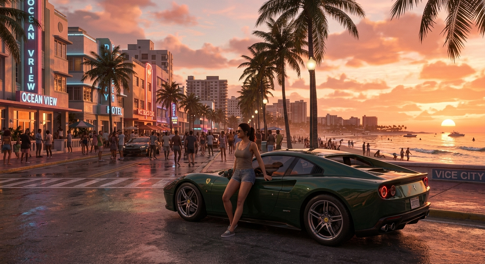

Meu primeiro post
Pronto para o maior lançamento da história dos games? Conecte-se com a comunidade, fique por dentro das atualizações e domine Vice City com a gente!
Informações e especulações sobre GTA 6
Pronto para o maior lançamento da história dos games? Conecte-se com a comunidade, fique por dentro das atualizações e domine Vice City com a gente!

O retorno a Vice City está cada vez mais próximo! Prepare-se para vivenciar uma nova era no mundo aberto, com detalhes insanos, personagens marcantes e muita ação. Ansioso para esse lançamento?